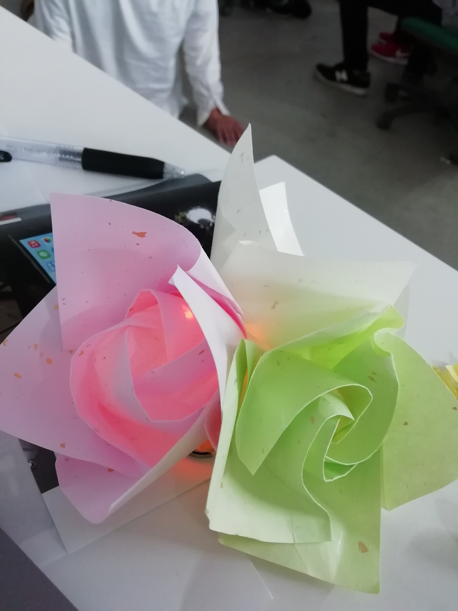

crosstech design report2.html.<!DOCTYPE html>
<html lang="en" dir="ltr">
  <head>
    <meta charset="utf-8">
    <title></title>
  </head>
  <body>

  </body>
</html>
<!DOCTYPE html>
<html lang="en" dir="ltr">
  <head>
    <meta charset="utf-8">
    <title>クロステックデザイン演習：個人のレポート2</title>
<h4>作った「LEDで光るもの」</h4>
<p>折り紙のバラ<br>
特徴・一つ約60円ででき、コンパクトに収納できるのでイベント会場の飾り付けに最適。100個頼んでも6000円で飾れ、15×15×15cm内に収まる。</p>



<br>
